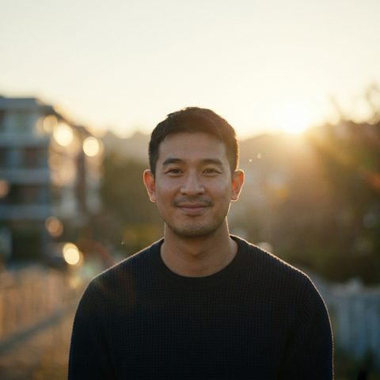

Brand · Event · E-commerce · PR · AI Marketing
Thunpawat
Techarsoontornsakun
Marketing Manager building brands end-to-end — strategy, event marketing, e-commerce, PR, creative, and AI-driven automation.
ธันย์ปวัฒน์ เตชสุนทรสกุล — also known as Maggi

Profile
Strategy, brand, and AI — end to end.
Thunpawat brings over a decade of experience spanning brand & digital marketing, event marketing, e-commerce, and data-driven strategy — reading the big picture sharply while staying hands-on through execution. His performance-driven approach is backed by a current Google Partner Certification.
He applies AI end-to-end across marketing operations — content automation, audience insight, ad optimization, and brand intelligence — sharpening campaign accuracy while lowering cost per result.
His brand work runs the full arc: positioning, brand identity, and communication frameworks, through to customer experience programs built for durable, sustainable growth.
Today he leads marketing as a Marketing Manager across a multi-brand portfolio — running growth strategy, performance campaigns, digital transformation, and turning data into ROI and competitive advantage.
Impact
Career highlights.
U-POWER 2025
National award for marketing strategy development and a country-level pitch — a four-month program.
Selected Work
A full-funnel marketing portfolio.
Event marketing, CSR, digital, e-commerce, PR, creative, and AI — spanning the brands of INNOFRESH.
Event Marketing & Roadshow21+ projects
Exhibition & Trade Show
INNOFRESH × THAIFEX–ANUGA ASIA 2025 · INNOFRESH × THAIFEX–ANUGA ASIA 2026 · HAPEX / Halal Expo 2026 (Hat Yai)
Consumer Event
งานเด็กดี TCAS · English On T × Say Ohh! × ไร่ขนุน · มหกรรมนิยาย สามย่านมิตรทาวน์ 2025 · มหกรรมนิยาย สามย่านมิตรทาวน์ 2026 · ตลาดนัดเบียร์คราฟต์ ตลาดนัดใจฟู @นครนายก
Songkran Campaign
ช่างชุ่ย สงกรานต์ 2025 · สนามหลวง สงกรานต์ 2025 · สยามผ้าขาวม้า ครองเมือง · วันไหลบางแสน 2026
Roadshow & Activation
Office Roadshow 20 Locations × Say Ohh! (2025) · ไพลิน “จัดจ้านจนต้องชิม” Roadshow 10 Locations (2026)
Concert & Entertainment
คอนเสิร์ต “ปล่อยให้มันผ่านไป” (4 ครั้ง) · ปล่อยให้มันเป็นไป @ขอนแก่น 2025
Special Campaign
โครงการ U-POWER 2025 (4 เดือน · รองชนะเลิศอันดับ 1 ระดับประเทศ) · Valentine Campaign @ Siam Paragon 2025 · Valentine Campaign @ บ้านนา 2025 · สมรสเท่าเทียม @บ้านนา × ไก่กะไข่ Say Ohh! · หวย Say Ohh!
CSR & Community Marketing18+ projects
Running & Health Campaign
Bangkok Post Run · เป่าปาก RUN โค้ชเดี่ยว @เขื่อนขุนด่าน 2025 · เป่าปาก RUN โค้ชเดี่ยว 2026
Education & Social Impact
ติวข้อสอบ มหาวิทยาลัยเกษตรศาสตร์ × Say Ohh! · สอน AI ให้ผู้พิการ × Say Ohh!
Community Support
ปั่นเพื่อแม่ 2025 · ปั่นเพื่อพ่อ 2025 · สนับสนุนชุมชนคลองเตย × Fresh O’ · สนับสนุนชมรมดูดาว มหาวิทยาลัยเกษตรศาสตร์ · สนับสนุนงาน Freshy Day / Freshy Night
School & University
กีฬาสี โรงเรียนจุฬาภรณ์ · กีฬาสี สาธิต มศว ประสานมิตร · Say Ohh! × ฟุตบอลประเพณี CU-TU 2025 · เกษตรแฟร์ “อิ่มความรู้ อิ่มท้อง” 2025 · ไพลิน “จัดจ้านจนต้องซี๊ด” @CU 2026 · ไพลิน “จัดจ้านจนต้องซี๊ด” @TU 2026
Entertainment
Cover Dance T-Series Pop 2025 · หวย Say Ohh!
Digital Marketing & Online CampaignInfluencer · Campaign · Content
Influencer Marketing
บริหาร KOL / Influencer มากกว่า 30 คนทั่วประเทศไทย · KOL Campaign ร่วมกับคุณเอิงเอย · KOL Campaign ร่วมกับคุณกระแต
Campaign Management
Say Ohh! Lucky Draw Campaign 2025 · ไพลิน Lucky Draw Campaign 2026 · KOL Promote Taste Series · Songkran Campaign – Say Ohh! · Songkran Campaign – ไพลิน · Songkran Campaign – ไพลิน บางแสน
Content Marketing
Shooting ภาพสินค้า 5 แบรนด์ในเครือ Innofresh · Facebook Marketing · Instagram Marketing · TikTok Marketing · X (Twitter) Marketing
E-commerce & Marketplace4 marketplaces · 100+ SKUs
Marketplace Management
Shopee · TikTok Shop · Lazada · Makro PRO
Performance Marketing
Optimize Ads Campaign · Promotion Strategy · Double Day Campaign · Mega Campaign Planning
Product Management
บริหารและอัปเดตสินค้ากว่า 100 SKU · Product Listing Optimization · Product Content Management
Fulfillment
Setup Fulfillment System · Warehouse Integration · Marketplace Operation
Technical Marketing
Setup Meta Conversion API (CAPI) · Setup Makro PRO API · Marketplace Data Validation
Live Commerce
Live Commerce with KOL · 24-Hour Campaign (11.11) · Live Commerce Campaign
PR, Corporate Comms & Ad ComplianceMedia · IMC · Regulatory
Media Relations
ThaiFEX 2025 Media Relations · ThaiFEX 2026 Media Relations · เชิญสื่อมวลชนเข้าร่วมงาน · ประสานงานกับสื่อและพันธมิตรทางธุรกิจ
Advertising & Corporate Communication
จัดทำสคริปต์ KOL / KOC / UGC · จัดทำสคริปต์โฆษณาสำหรับ TV, Online และ Tie-in Marketing · ผลิตคลิปประชาสัมพันธ์ก่อนเริ่มกิจกรรม · วางแผนและบริหารการสื่อสารการตลาดแบบครบวงจร (IMC)
Advertising Compliance & Regulatory Affairs
ขออนุญาตเผยแพร่สื่อโฆษณาตามข้อกำหนดภาครัฐ · จัดเตรียมและยื่นเอกสารเพื่อพิจารณาโฆษณา · Pre-Clearance สื่อโฆษณาและประชาสัมพันธ์ · ประสานงานการตรวจพิจารณากับสำนักงาน กสทช. · ตรวจสอบข้อความ ภาพ เสียง เนื้อหาให้เป็นไปตามกฎหมาย · Advertising Approval Workflow · ติดตามผล แก้ไข และจัดเก็บเอกสารการอนุญาต
Brand Advocacy
นำผลิตภัณฑ์ของบริษัทเป็น Case Study สอนด้าน AI และการตลาด · บรรยายให้ มหาวิทยาลัยมหาสารคาม, มหาวิทยาลัยกรุงเทพ, จุฬาลงกรณ์มหาวิทยาลัย, มหาวิทยาลัยสวนดุสิต
Branding & Creative DesignBooth · POSM · Visual
Event & Exhibition Design
ออกแบบบูทกิจกรรมแบรนด์ Say Ohh! · ออกแบบบูทกิจกรรมแบรนด์ไพลิน · ออกแบบ Exhibition Booth · ออกแบบ Event Activation
Marketing Materials
Booth Graphic · Backdrop · Banner · POSM · Standee · Shelf Display · Packaging Mockup · Event Visual
AI, Marketing Technology & AutomationImplementation · MarTech · Education
AI Implementation
นำ AI มาใช้วางแผนการตลาดและสร้างคอนเทนต์ · พัฒนา Workflow สำหรับ Marketing Automation · ประยุกต์ใช้ AI เพิ่มประสิทธิภาพทีมการตลาด
Marketing Technology
เชื่อมต่อระบบ API สำหรับงาน E-commerce · ออกแบบระบบทำงานร่วมกับ Google Workspace · พัฒนา Dashboard และระบบรายงานการตลาด · ออกแบบ Workflow ด้วย AI และ Automation
AI Education
วิทยากรด้าน AI Marketing และ AI Automation · Prompt Engineering · AI Workflow และ AI Agent · การประยุกต์ใช้ AI สำหรับภาคธุรกิจและการตลาด
Brands
The INNOFRESH portfolio.
Brand identity, CI systems, and communication assets across the consumer brands.
References & assets
Capabilities
Professional skills.
Marketing Strategy
Digital & Performance
Event Management
Public Relations
Creative
Technical
Credentials
Certified across the stack.
Background
Education & languages.
First Class Honors · Gold Medal · 2017
First Class Honors · Gold Medal · 2013
Projects
Things I've built.
Beyond campaigns — hands-on products that put AI to work for people.
Accessly
BUILD FOR GOODAI Accessibility Marketing Assistant
An AI-powered tool that helps small businesses, schools, nonprofits, and community organizations make digital communication clearer and more inclusive. Paste or upload content to get an accessibility score and prioritized issues, then generate alt text, an easy-to-read version, or a complete accessible rewrite — so people with visual impairments, reading difficulties, and other underserved groups aren't excluded from essential information.